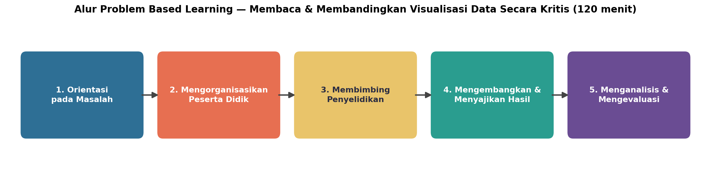
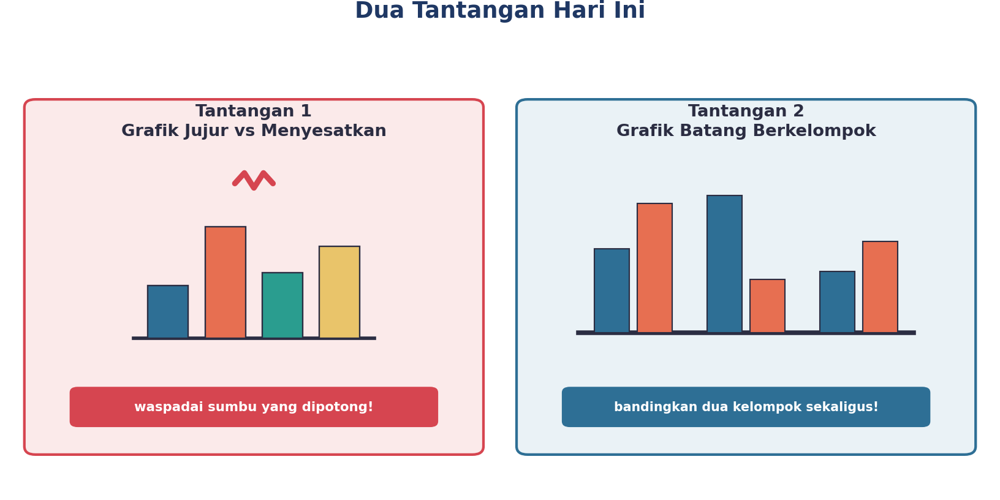
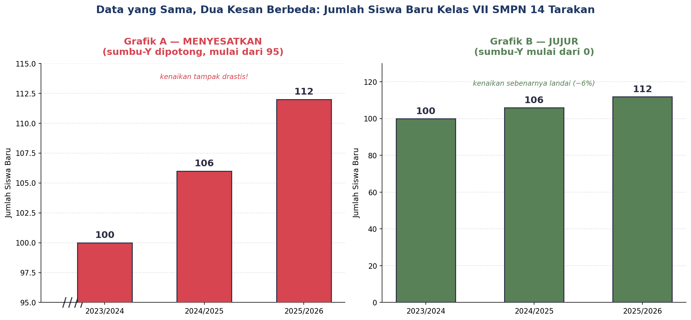
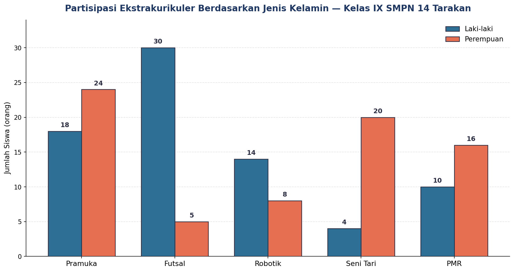
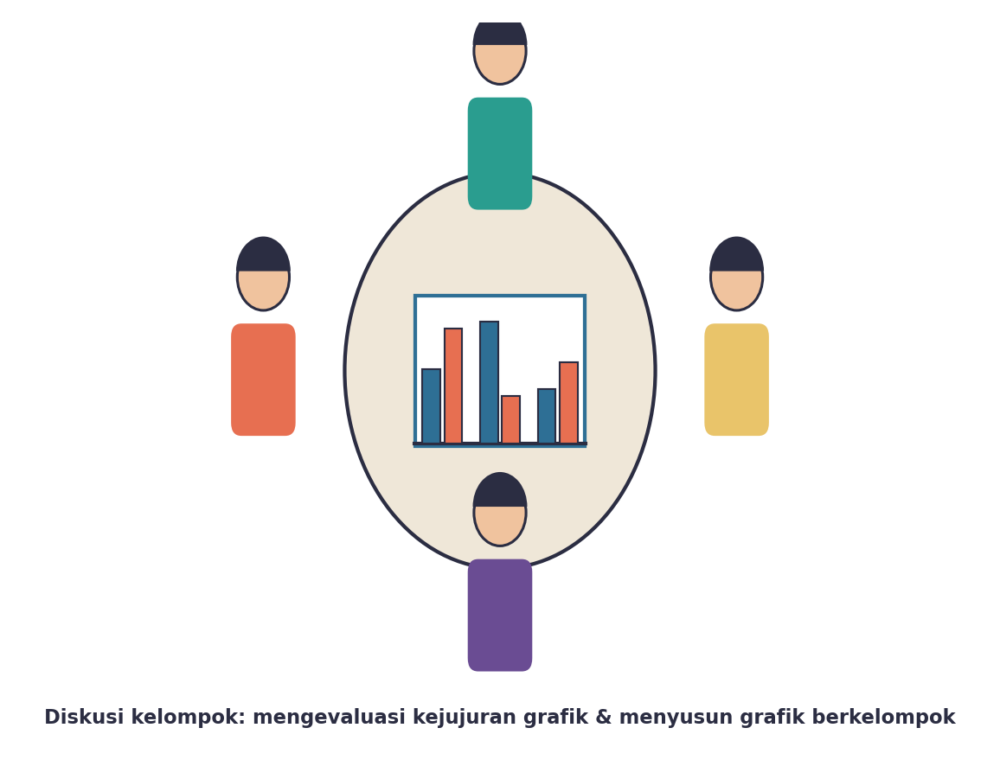
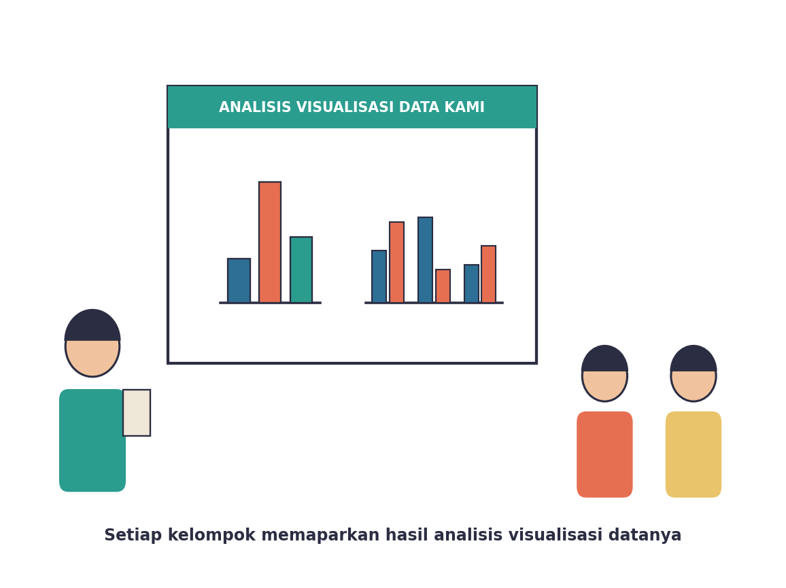

Yuk, Intip Apa yang Bakal Kamu Kuasai Hari Ini
Setelah pertemuan ini, kamu bakal bisa:
- ngenalin grafik yang bisa ‘nipu’ pembaca meskipun datanya sebenarnya bener, khususnya trik sumbu yang dipotong;
- nyusun grafik batang berkelompok (grouped bar chart) buat bandingin dua kelompok data sekaligus dalam satu grafik;
- narik kesimpulan yang tajam dan berbasis data dari grafik yang isinya lebih dari satu variabel.
Kata Kunci
Bisa Bikin Grafik Aja, Ternyata Belum Cukup
Coba inget-inget deh, pernah nggak kamu scroll medsos terus lihat grafik yang bikin kamu mikir, “Wah, naik/turunnya drastis banget!” — tapi pas kamu cek lagi angkanya, ternyata biasa aja? Nah, itu bukan kebetulan. Itu bisa jadi TRIK dalam cara grafiknya digambar.
Di sinilah pentingnya jadi pembaca grafik yang KRITIS — bukan cuma bisa bikin grafik, tapi juga bisa ngecek apakah grafik yang kamu lihat jujur atau enggak. Selain itu, kamu juga bakal belajar cara nyajiin dua kelompok data sekaligus dalam satu grafik, biar makin jago membandingkan.
Hari ini kamu akan menghadapi kasus “SMP Negeri 14 Tarakan dalam Angka” — ada dua tantangan seru yang harus diselesaikan kelompokmu secara berurutan. Siap-siap jadi detektif grafik, ya!
Kenalan Dulu, Yuk, Sama Kegiatan Hari Ini
Beda dari pertemuan pertama TP 3 kemarin yang santai eksplorasi (Inquiry Learning), hari ini kamu bakal ngerasain gaya belajar yang berbeda: Problem Based Learning. Kamu langsung dikasih masalah nyata yang harus dipecahkan kelompokmu lewat lima tahap seru berikut ini.

Kenalan Sama Dua Tantangan Hari Ini
Ceritanya gini: tim publikasi dan OSIS SMP Negeri 14 Tarakan lagi bikin laporan “Sekolah dalam Angka”, tapi mereka punya dua masalah yang butuh bantuan kamu.

| Tantangan | Masalahnya Apa? |
|---|---|
| 1. Grafik Jujur vs Menyesatkan | Ada grafik jumlah siswa baru yang bikin kenaikannya kelihatan DRASTIS BANGET, padahal kalau dicek lagi datanya, kenaikannya biasa aja. Kenapa bisa gitu? |
| 2. Grafik Batang Berkelompok | OSIS mau nunjukkin data peserta ekstrakurikuler cowok VS cewek di LIMA kegiatan sekaligus — tapi bingung, masa iya harus bikin lima grafik terpisah? |
Tantangan 1: Ngendus Grafik yang Menyesatkan
Coba lihat data jumlah siswa baru kelas VII SMPN 14 Tarakan tiga tahun terakhir: 2023/2024 = 100 siswa, 2024/2025 = 106 siswa, 2025/2026 = 112 siswa. Kalau dihitung, kenaikannya cuma sekitar 6% dari tahun pertama ke tahun terakhir — landai-landai aja, kan?
Tapi coba lihat dua grafik di bawah ini. Data-nya SAMA PERSIS, tapi kesannya beda banget!

Perhatikan sumbu-Y (garis angka di sebelah kiri) pada Grafik A: nggak dimulai dari 0, tapi dari 95! Ini namanya sumbu dipotong (truncated axis). Efeknya, selisih kecil antar-batang jadi kelihatan RAKSASA. Padahal di Grafik B yang sumbu-Y-nya dimulai dari 0, kelihatan jelas bahwa kenaikannya sebenarnya tipis aja.
1. Cek sumbu-Y: apakah dimulai dari 0? Kalau enggak, hati-hati — bisa jadi kenaikan/penurunannya dilebih-lebihkan.
2. Bandingkan angka aslinya, jangan cuma lihat tinggi batangnya sekilas.
3. Tanya diri sendiri: ‘Kalau digambar dari 0, apa masih terlihat sedramatis ini?’
Nggak cuma sumbu dipotong, lho — ada juga trik lain kayak pakai ukuran gambar yang nggak proporsional, atau milih rentang waktu yang ‘menguntungkan’ cerita tertentu. Tapi sumbu dipotong ini yang paling sering muncul dan paling penting kamu kenali dulu.
Tantangan 2: Bikin Grafik yang Isinya Dua Cerita Sekaligus
Sekarang OSIS mau nunjukkin data peserta ekstrakurikuler cowok VS cewek di lima kegiatan: Pramuka, Futsal, Robotik, Seni Tari, dan PMR. Kalau dibikin lima grafik terpisah, ribet dan susah dibandingkan. Untungnya ada solusi: GRAFIK BATANG BERKELOMPOK!

Triknya gampang: setiap kategori (misalnya Pramuka) dapat DUA batang yang berdampingan — satu buat laki-laki, satu buat perempuan, biasanya dibedakan pakai warna. Dengan cara ini, kamu bisa langsung lihat perbandingan di SETIAP kategori, sekaligus juga bisa bandingin ANTARKATEGORI.
Coba perhatikan baik-baik grafiknya. Ada beberapa hal menarik yang bisa kamu baca, misalnya:
- Futsal jomplang banget — 30 cowok vs cuma 5 cewek.
- Seni Tari juga jomplang, tapi kebalikannya — 4 cowok vs 20 cewek.
- Pramuka dan PMR kelihatan lebih seimbang dibanding dua kegiatan tadi.
Nah, kesimpulan-kesimpulan kayak gini yang bakal kamu latih nemuin sendiri nanti pas diskusi kelompok!
Aktivitas Seru: Taklukkan Dua Tantangan Bareng Kelompok!
Sekarang giliran kamu beraksi! Kelompokmu akan mengerjakan KEDUA tantangan secara berurutan: dahulukan Tantangan 1 (Grafik Jujur vs Menyesatkan), baru lanjut Tantangan 2 (Grafik Batang Berkelompok).
Buat Tantangan 1, kelompokmu akan membandingkan sepasang grafik dan menuliskan alasan kenapa salah satu versinya berpotensi menyesatkan pembaca.
Buat Tantangan 2, kelompokmu akan dapat tabel data ekstrakurikuler — gambar jadi grafik batang berkelompok pakai kertas grafik, terus tulis minimal dua kesimpulan yang bisa kamu baca dari grafik itu.

Waktunya Pamer Hasil Analisis

Perwakilan kelompok akan memaparkan temuan tentang grafik yang menyesatkan (beserta alasannya) dan grafik batang berkelompok yang sudah disusun (beserta kesimpulannya). Bandingkan sama kelompok lain — apakah ada sudut pandang atau kesimpulan baru yang belum kepikiran sama kelompokmu?
Nggak masalah kalau grafik gambar tanganmu nggak serapi contoh digital — yang penting batangnya berdampingan jelas, ada labelnya, dan kesimpulanmu benar-benar berdasarkan data yang terlihat di grafik!
Bocoran Tips Biar Makin Jago
- Setiap ketemu grafik batang di mana pun (medsos, berita, buku), cek dulu sumbu-Y-nya: mulai dari 0 atau enggak?
- Kalau mau bikin grafik batang berkelompok, kasih warna yang beda dan jelas buat tiap kelompok, dan jangan lupa kasih legenda (keterangan warna) biar nggak bingung.
- Sebelum menyimpulkan sesuatu dari grafik, coba baca ulang angka aslinya dulu — jangan cuma percaya sama kesan visual sekilas.
Rangkuman Singkat
- Grafik menyesatkan adalah grafik yang meskipun angkanya benar, digambar dengan cara yang membuat kesan yang didapat pembaca jadi berlebihan — salah satu triknya adalah sumbu-Y yang dipotong (tidak dimulai dari 0).
- Grafik batang berkelompok adalah cara menyajikan dua atau lebih kelompok data berdampingan untuk setiap kategori, sehingga bisa dibandingkan sekaligus dalam satu grafik.
- Pembaca grafik yang kritis selalu mengecek sumbu dan angka asli, bukan cuma percaya kesan visual pertama.
- Kesimpulan dari grafik multi-series harus benar-benar berbasis data yang terlihat, bukan sekadar tebakan.
Cek Dulu, Udah Paham Belum?
Sebelum pertemuan ini ditutup, coba jawab dulu pertanyaan berikut sendirian.
Kamus Kecil Istilah Penting
- Grafik Menyesatkan
- visualisasi data yang, meskipun angkanya benar, digambar dengan cara yang membuat pembaca menangkap kesan yang berlebihan atau tidak akurat.
- Sumbu Dipotong (Truncated Axis)
- sumbu grafik (biasanya sumbu-Y) yang tidak dimulai dari nol, sehingga selisih antarnilai tampak lebih besar daripada proporsi sebenarnya.
- Grafik Batang Berkelompok
- grafik batang yang menampilkan dua atau lebih kelompok data berdampingan untuk setiap kategori.
- Data Multi-series
- kumpulan data yang terdiri atas lebih dari satu variabel/kelompok yang ditampilkan bersamaan dalam satu visualisasi.
- Literasi Data
- kemampuan membaca, memahami, dan mengevaluasi data serta visualisasinya secara kritis.